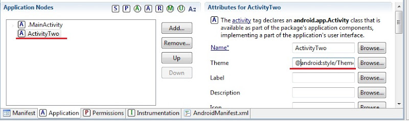

В этом уроке:
- немного теории по Task
- фиксируем Activity в состоянии Paused
В этом уроке узнаем, куда помещается Activity, пока его не видно. И откуда оно достается при нажатии кнопки назад. В документацие об этом написано достаточно понятно. Я сделаю краткий перевод основной части этой документации и использую их схемы.
Task
Мы уже знаем, что приложение может содержать несколько Activity. И что Activity умеет вызывать Activity из других приложений с помощью Intent и Intent Filter. Если вы хотите отправить письмо из вашего приложения, вы вызываете Activity почтовой программы и передаете ей данные. Письмо уходит и вы возвращаетесь в ваше приложение. Создается ощущение, что все это происходило в рамках одного приложения. Такая «бесшовность» достигается засчет того, что оба Activity (ваше и почтовое) были в одном Task.
Прежде, чем продолжу объяснять, хочу сразу привести аналогию, чтобы тему легче было понять. В скобках я буду давать понятия-аналоги из Android.
Механизм организации Activity в Android очень схож по реализации с навигацией в браузере. Вы находитесь в одной вкладке(Task) и открываете страницы (Activity) переходя по ссылкам (Intent). В любой момент можете вернуться на предыдущую страницу, нажав кнопку Назад. Но кнопка Вперед отсутствует, т.к. страница, на которой была нажата кнопка Назад, стирается из памяти. И надо снова нажимать ссылку, если хотим попасть на нее. Если вам надо открыть что-то новое, вы создаете новую вкладку и теперь уже в ней открываете страницы, переходите по ссылкам, возвращаетсь назад. В итоге у вас есть несколько вкладок. Большинство из них на заднем фоне, а одна (активная, с которой сейчас работаете) – на переднем.
В итоге список аналогий браузера и Android таков:
Браузер – Android
Вкладка с историей посещений – Task
Страница – Activity
Ссылка – Intent
Теперь вам будет более понятен текст про Task.
Task – группа из нескольких Activity, с помощью которых пользователь выполняет определенную операцию. Обычно стартовая позиция для создания Task – это экран Домой (Home).
Находясь в Home вы вызываете какое-либо приложение из списка приложений или через ярлык. Создается Task. И Activity приложения (которое отмечено как MAIN в манифест-файле) помещается в этот Task как корневое. Task выходит на передний фон. Если же при вызове приложения, система обнаружила, что в фоне уже существует Task, соответствующий этому приложению, то она выведет его на передний план и создавать ничего не будет.
Когда Activity_A вызывает Activity_B, то Activity_B помещается на верх (в топ) Task и получает фокус. Activity_A остается в Task, но находится в состоянии Stopped (его не видно и оно не в фокусе). Далее, если пользователь жмет Back находясь в Activity_B, то Activity_B удаляется из Task и уничтожается. А Activity_A оказывается теперь на верху Task и получает фокус.
В каком порядке открывались (добавлялись в Task) Activity, в таком порядке они и содержатся в Task. Они никак специально не сортируются и не упорядочиваются внутри. Набор Activity в Task еще называют back stack. Я буду называть его просто - стэк.
Схема (с офиц.сайта) демонстрирует пример:

В верхней части то, что видит пользователь. В нижней – содержимое Task. Видно, как при вызове новых Activity они добавляются в верх стэка. А если нажата кнопка Назад, то верхнее Activity из стэка удаляется и отображается предыдущее Activity.
Допустим у нас есть Task с несколькими Activity. Он на переднем фоне, мы с ним работаем сейчас.
- если мы нажмем кнопку Home, то ничего не будет удалено, все Activity сохранятся в этом Task-е, а сам Task просто уйдет на задний фон и его всегда можно будет вызвать оттуда, снова вызвав приложение, Activity которого является корневым для Task-а. Либо можно удерживать кнопку Home и мы увидим как раз список Task-ов, которые расположены на заднем фоне.
- если же в активном Task-е несколько раз нажимать кнопку Назад, то в итоге в стэке не останется Activity, пустой Task будет удален и пользователь увидит экран Home.
Там еще как всегда куча нюансов и сложностей, но мы пока остановимся на этом и в дебри не полезем. Этих знаний вполне хватит, чтобы ответить на вопросы предыдущего урока: почему на шаге 2 MainActivity исчезло с экрана, но осталось висеть в памяти и не было уничтожено? Ведь на шаге 3 было уничтожено ActivityTwo после того, как оно пропало с экрана. А на шаге 4 было в итоге уничтожено и MainActivity. Почему шаг 2 стал исключением?
Теперь вы знаете, почему. Потому, что на шаге 2 MainActivity осталось в стэке, а ActivityTwo вставилось на верх стэка и получило фокус. Ну а на шаге 3 и 4 были удалены Activity из верха стэка, в Task не осталось Activity, и мы увидели экран Home.
Если бы мы на шаге 3 нажали не Back, а Home, то Task с обоими Activity ушел бы заднй фон и ничего не было бы уничтожено.
Paused
Теперь давайте откроем проект с прошлого урока P0241_TwoActivityState. Мы хотели поймать состояние Paused для Activity. Это состояние означает, что Activity не в фокусе, но оно видно, пусть и частично. Мы можем этого добиться, если присвоим диалоговый стиль для ActivityTwo. Оно отобразится как всплывающее окно и под ним будет частично видно MainActivity – оно и будет в статусе Paused. Давайте реализуем.
Для этого открываем AndroidManifest.xml, вкладка Application, находим там ActivityTwo и справа в поле Theme пишем такой текст: @android:style/Theme.Dialog

Все сохраняем и запускаем приложение.
Появилось MainActivity
Логи:
MainActivity: onCreate()
MainActivity: onStart()
MainActivity: onResume()
Все верно.
Вызываем ActivityTwo.
Логи:
MainActivity: onPause()
ActivityTwo: onCreate()
ActivityTwo: onStart()
ActivityTwo: onResume()
Видим, что не был вызван метод onStop для MainActivity, а значит приложение не было переведено в состояние Stopped и находится в режиме Paused.
Нажмем Back.
Логи:
ActivityTwo: onPause()
MainActivity: onResume()
ActivityTwo: onStop()
ActivityTwo: onDestroy()
MainActivity восстановилось одним лишь вызовом onResume, а onStart не понадобился, т.к. оно было в состоянии Paused, а не Stopped.
Мы четко увидели разницу между этим примером и им же на прошлом уроке. И MainActivity у нас был в состоянии Paused.
Далее можно нажать Back, а можно Home - вы уже знаете, что произойдет в обоих случаях. По логам можно убедиться в этом.
Чтобы вернуть ActivityTwo нормальный режим отображения, зайдите снова в манифест и удалите строку из поля Theme.
Кстати, у вас уже вполне достаточно знаний, чтобы создать приложение с кучей Activity, прописать вызовы и поиграться, посмотреть логи. Тем самым закрепите темы LifeCycle и Task.